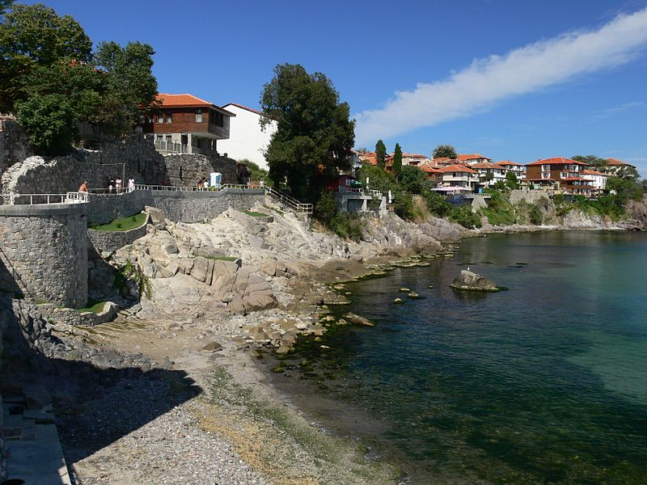

Созопол

Созопол е град в Югоизточна България на Черно море. Той е разположен на няколко малки полуострова в южната част на Бургаския залив. С население от 4317 души по данни от Преброяването към 1 февруари 2011 година, той се намира в област Бургас и е административен център на Община Созопол.
Созопол е наследник на гръцката колония Аполония и заедно с Несебър е един от най-старите български градове. От античността до 17 век Созопол е процъфтяващ търговски център. Той е известен както рибарски и винен център и заема важно място в търговията със зърно от Тракия. От късната античност градът се развива като важен църковен център с множествно средновековни манастири.
Созопол е наследник на гръцката колония Аполония и заедно с Несебър е един от най-старите български градове. От античността до 17 век Созопол е процъфтяващ търговски център. Той е известен както рибарски и винен център и заема важно място в търговията със зърно от Тракия. От късната античност градът се развива като важен църковен център с множествно средновековни манастири.
Със своето културно-историческо минало, със запазената си архитектура от 18 - 19 век, своите плажове и ежегодните празници на изкуствата Аполония Созопол привлича днес множество туристи.
Туризмът е ключов в икономическата характеристика в най-новата история на Созопол. Градът и общината са основна дестинация по южното българско Черноморие. В непосредствена близост до града са няколко къмпинга: „Градина“, „Златна рибка“, „Каваци“, „Веселие“ и „Смокиня“. Първите два, както и последните три имат обща брегова ивица, която е и един от най-големите нудистки плажове в България.
Предложения за хотели в Созопол